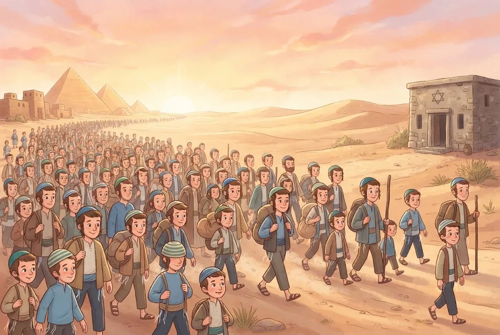
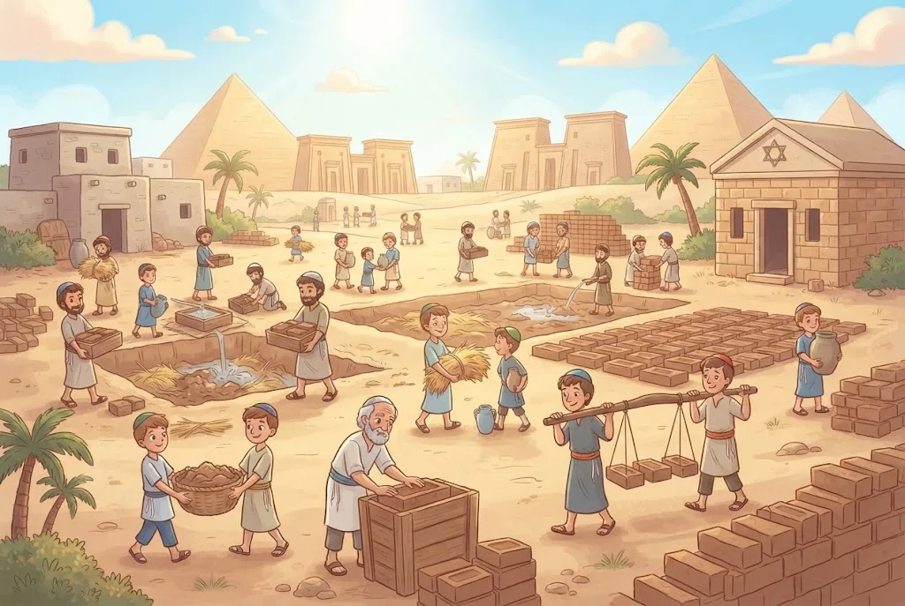
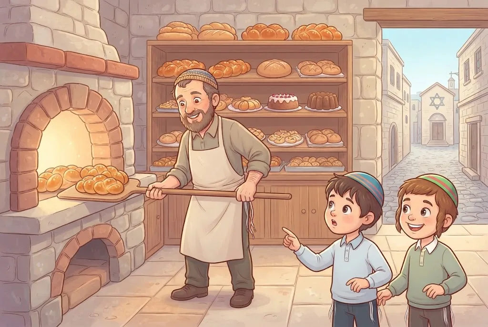

כְּשֶׁפֶּסַח מִתְקָרֵב, כָּל הַבַּיִת מִתְמַלֵּא בְּנִקָּיוֹן, בְּרֵיחַ שֶׁל מַצּוֹת וּבְהִתְרַגְּשׁוּת. אֲבָל רֶגַע... לָמָּה בְּעֶצֶם חוֹגְגִים אֶת פֶּסַח? מָה הַסּוֹד שֶׁל הַמַּצָּה הַדַּקָּה, וְלָמָּה מִתְרַחֲקִים כָּל כָּךְ מֵהֶחָמֵץ? בַּפֶּרֶק הַזֶּה נְגַלֶּה מָה מִסְתַּתֵּר מֵאֲחוֹרֵי הֶחָג הָרִאשׁוֹן מִשְּׁלֹשֶׁת הָרְגָלִים.
1שְׁנֵי שֵׁמוֹת לֶחָג
בַּתּוֹרָה יֵשׁ לֶחָג שְׁנֵי שֵׁמוֹת: ״חַג הַמַּצּוֹת״ וְ״חַג הַפֶּסַח״. ״חַג הַמַּצּוֹת״ – כְּנֶגֶד הָאֱמוּנָה: ה׳ נִגְלָה וְגָאַל אוֹתָנוּ עוֹד לִפְנֵי שֶׁהַבָּצֵק שֶׁל אֲבוֹתֵינוּ הִסְפִּיק לְהַחְמִיץ. ״חַג הַפֶּסַח״ – כְּנֶגֶד סְגֻלַּת יִשְׂרָאֵל: בְּמַכַּת בְּכוֹרוֹת ה׳ פָּסַח עַל בָּתֵּי יִשְׂרָאֵל, וְהִכָּה רַק אֶת הַמִּצְרִים.
🤔 לָמָּה? בְּכָל הַמַּכּוֹת רָאוּ אֶת הַהֶבְדֵּל בֵּין יִשְׂרָאֵל לְמִצְרַיִם. כָּךְ הִתְגַּלּוּ יַחַד שְׁנֵי דְּבָרִים: שֶׁה׳ מַנְהִיג אֶת הָעוֹלָם, וְשֶׁעַם יִשְׂרָאֵל מְיֻחָד לוֹ. שְׁנֵי הַשֵּׁמוֹת הֵם שְׁנֵי פָּנִים שֶׁל דָּבָר אֶחָד: שֵׁם ה׳ מִתְגַּלֶּה בָּעוֹלָם עַל יְדֵי עַם יִשְׂרָאֵל.
(פֶּרֶק א׳, הֲלָכָה א׳)

2עַם שֶׁנִּבְחַר
עַם יִשְׂרָאֵל לֹא נוֹצַר כְּמוֹ שְׁאָר הָעַמִּים. הוּא נוֹלַד בִּיצִיאַת מִצְרַיִם, בְּאוֹתוֹת וּבְמוֹפְתִים, כְּדֵי לְקַבֵּל אֶת הַתּוֹרָה. הַנָּבִיא אוֹמֵר בְּשֵׁם ה׳: ״עַם זוּ יָצַרְתִּי לִי, תְּהִלָּתִי יְסַפֵּרוּ״. כְּלוֹמַר: הַתַּפְקִיד שֶׁלָּנוּ הוּא לְגַלּוֹת בָּעוֹלָם אֶת ה׳ וְאֶת הַטּוֹב שֶׁלּוֹ.
🤔 לָמָּה? חֲכָמִים אָמְרוּ שֶׁעוֹד לִפְנֵי שֶׁנִּבְרָא הָעוֹלָם, ה׳ ״חָשַׁב״ עַל עַם יִשְׂרָאֵל. וְהַפֶּלֶא הַגָּדוֹל: ה׳ בָּחַר בָּנוּ דַּוְקָא כְּשֶׁהָיִינוּ עֲבָדִים חַלָּשִׁים בְּמִצְרַיִם.
💛 ה׳ לֹא בָּחַר בָּנוּ כִּי הָיִינוּ חֲזָקִים אוֹ חֲשׁוּבִים – הוּא בָּחַר בָּנוּ מֵאַהֲבָה, וְהַבְּחִירָה הַזֹּאת שַׁיֶּכֶת גַּם לְךָ.
(פֶּרֶק א׳, הֲלָכָה א׳)
3זְמַן חֵרוּתֵנוּ
בְּדֶרֶךְ כְּלָל, עַם שֶׁמְּנַצֵּחַ אֶת מִי שֶׁשִּׁעְבֵּד אוֹתוֹ – הוֹפֵךְ אוֹתוֹ לְעֶבֶד. אֲבָל בְּנֵי יִשְׂרָאֵל לֹא עָשׂוּ כָּךְ. גַּם אַחֲרֵי שֶׁהַמִּצְרִים הֻכּוּ בְּעֶשֶׂר מַכּוֹת, יִשְׂרָאֵל לֹא נִסּוּ לִשְׁלֹט בָּהֶם, אֶלָּא רַק יָצְאוּ לְחֵרוּת. לָכֵן פֶּסַח נִקְרָא ״חַג הַחֵרוּת״, וּבַתְּפִלָּה אוֹמְרִים עָלָיו ״זְמַן חֵרוּתֵנוּ״.
🤔 לָמָּה? זוֹ הָיְתָה הַפַּעַם הָרִאשׁוֹנָה שֶׁהָעוֹלָם רָאָה שֶׁכָּל אָדָם רָאוּי לִהְיוֹת חָפְשִׁי. וּמִי שֶׁחָפְשִׁי – אַחְרַאי עַל הַמַּעֲשִׂים שֶׁלּוֹ. אוּלַי לָכֵן פֶּסַח הוּא הָרִאשׁוֹן מִשְּׁלֹשֶׁת הָרְגָלִים.
(פֶּרֶק א׳, הֲלָכָה ב׳)

4״כִּי גֵרִים הֱיִיתֶם״
לָמָּה הָיִינוּ צְרִיכִים לִסְבֹּל כָּל כָּךְ בְּמִצְרַיִם? כִּי הַתַּפְקִיד שֶׁלָּנוּ הוּא לְתַקֵּן אֶת הָעוֹלָם, וּמִי שֶׁסָּבַל בְּעַצְמוֹ – יוֹדֵעַ כַּמָּה כּוֹאֵב כְּשֶׁאַחֵר פּוֹגֵעַ בּוֹ. לָכֵן כְּשֶׁהַתּוֹרָה מְצַוָּה עָלֵינוּ לִנְהֹג יָפֶה בַּחַלָּשׁ, הִיא מַזְכִּירָה אֶת מִצְרַיִם: ״וְגֵר לֹא תִלְחָץ, וְאַתֶּם יְדַעְתֶּם אֶת נֶפֶשׁ הַגֵּר, כִּי גֵרִים הֱיִיתֶם בְּאֶרֶץ מִצְרָיִם״.
🤔 לָמָּה? חֲכָמִים סִפְּרוּ שֶׁעוֹד לִפְנֵי הַמַּכּוֹת, ה׳ צִוָּה אֶת יִשְׂרָאֵל לְשַׁחְרֵר עֲבָדִים אַחֲרֵי שֵׁשׁ שָׁנִים וְלָתֵת לָהֶם מַתָּנוֹת בְּנַדְבָנוּת. כָּךְ, עוֹד לִפְנֵי שֶׁיָּצְאוּ לְחֵרוּת, הֵם קִבְּלוּ עַל עַצְמָם לֹא לְהִתְאַכְזֵר לְאַף אֶחָד.
💛 כְּשֶׁאֲנִי מְקָרֵב יֶלֶד חָדָשׁ בַּכִּתָּה, אֲנִי עוֹשֶׂה בְּדִיּוּק מָה שֶׁה׳ לִמֵּד אוֹתָנוּ בְּמִצְרַיִם.
(פֶּרֶק א׳, הֲלָכָה ב׳)
5הָרוּחַ יוֹצֵאת לְחֵרוּת
הַמִּצְרִים הֶאֱמִינוּ רַק בַּגּוּף וּבַחֹמֶר. הֵם חָשְׁבוּ שֶׁהָאָדָם הוּא רַק הַגּוּף שֶׁלּוֹ, וְלָכֵן בָּנוּ פִּירָמִידוֹת עֲנָקִיּוֹת – בָּתֵּי קְבָרוֹת מְפֹאָרִים לַגּוּף. עַם יִשְׂרָאֵל מַאֲמִין בַּנְּשָׁמָה וּבַה׳ הָאֶחָד, שֶׁאֵין לוֹ גּוּף וְאֵין לוֹ דְּמוּת. לָכֵן יְצִיאַת מִצְרַיִם הִיא לֹא רַק יְצִיאָה מֵעַבְדוּת – הִיא יְצִיאַת הָרוּחַ לְחֵרוּת מִכַּבְלֵי הַחֹמֶר.
🤔 לָמָּה? בַּטֶּבַע, הֶחָזָק טוֹרֵף אֶת הַחַלָּשׁ. מִי שֶׁמַּאֲמִין רַק בַּחֹמֶר חוֹשֵׁב שֶׁכָּךְ צָרִיךְ לִהְיוֹת. מִי שֶׁמַּאֲמִין בַּה׳ – שׁוֹאֵף לְתַקֵּן אֶת הָעוֹלָם וּלְהָבִיא צֶדֶק. וְכֵיוָן שֶׁגַּם אֲנַחְנוּ עֲדַיִן צְרִיכִים לְהִשְׁתַּחְרֵר מֵהַיֵּצֶר וּמֵהַתַּאֲווֹת, מִצְוָה לִזְכֹּר אֶת יְצִיאַת מִצְרַיִם בְּכָל יוֹם וּבְכָל לַיְלָה.
💛 כָּל פַּעַם שֶׁאֲנִי מְוַתֵּר עַל מַשֶּׁהוּ שֶׁהַיֵּצֶר רוֹצֶה, כְּדֵי לַעֲשׂוֹת אֶת רְצוֹן ה׳ – אֲנִי ״יוֹצֵא מִמִּצְרַיִם״ עוֹד קְצָת.
(פֶּרֶק א׳, הֲלָכָה ג׳)
6״כֵּן יִרְבֶּה וְכֵן יִפְרֹץ״
כְּכָל שֶׁהַמִּצְרִים שִׁעְבְּדוּ אֶת יִשְׂרָאֵל יוֹתֵר, כָּךְ יִשְׂרָאֵל הִתְרַבּוּ יוֹתֵר: ״וְכַאֲשֶׁר יְעַנּוּ אֹתוֹ, כֵּן יִרְבֶּה וְכֵן יִפְרֹץ״. כְּשֶׁהָיוּ שִׁשִּׁים רִבּוֹא, מִצְרַיִם הַגְּדוֹלָה הִתְמוֹטְטָה, וְיִשְׂרָאֵל יָצְאוּ לְקַבֵּל אֶת הַתּוֹרָה בְּסִינַי. וְהֵם לֹא יָצְאוּ בְּיָדַיִם רֵיקוֹת, אֶלָּא עִם רְכוּשׁ גָּדוֹל – שָׂכָר עַל שְׁנוֹת הָעַבְדוּת.
🤔 לָמָּה? הַמִּצְרִים יָכְלוּ לִבְחֹר בַּטּוֹב וְלַעֲזֹר לְיִשְׂרָאֵל, כְּמוֹ שֶׁיּוֹסֵף הַצַּדִּיק עָזַר לְמִצְרַיִם בִּשְׁנוֹת הָרָעָב. הֵם בָּחֲרוּ בָּרַע, וְלָכֵן נֶעֶנְשׁוּ בְּעֶשֶׂר מַכּוֹת – וְנַעֲשָׂה בָּהֶם דִּין צֶדֶק.
(פֶּרֶק א׳, הֲלָכָה ד׳)

7הֶחָמֵץ הַתּוֹפֵחַ וְהַמַּצָּה הַדַּקָּה
הַזֹּהַר אוֹמֵר שֶׁהֶחָמֵץ רוֹמֵז לַיֵּצֶר הָרָע – לַגַּאֲוָה. הַבָּצֵק תּוֹפֵחַ וּמִתְנַפֵּחַ, כְּמוֹ אָדָם גַּאַוְתָן שֶׁמַּגְדִּיל אֶת עַצְמוֹ. הַמַּצָּה נִשְׁאֶרֶת דַּקָּה, כְּמוֹ שֶׁה׳ בָּרָא אוֹתָהּ, וְהִיא רוֹמֶזֶת לָעֲנָוָה. לָכֵן בְּפֶסַח מִתְרַחֲקִים מִכָּל שֶׁמֶץ שֶׁל חָמֵץ: לֹא אוֹכְלִים אוֹתוֹ, וְגַם לֹא מַשְׁאִירִים אוֹתוֹ בַּבַּיִת.
(פֶּרֶק א׳, הֲלָכָה ה׳, הֲלָכָה ו׳)
8אִם הֶחָמֵץ רוֹמֵז לְגַאֲוָה – לָמָּה אוֹכְלִים אוֹתוֹ כָּל הַשָּׁנָה?
שְׁאֵלָה טוֹבָה! כָּל הַשָּׁנָה הֶחָמֵץ טוֹב. ה׳ נָתַן לָאָדָם חָכְמָה לְשַׁכְלֵל אֶת הָעוֹלָם: לֶאֱפוֹת עוּגוֹת טְעִימוֹת, לְפַתֵּחַ מַדָּע וּלְהַמְצִיא הַמְצָאוֹת. אֲבָל בְּפֶסַח אָנוּ עוֹסְקִים בְּיִסּוֹדוֹת הָאֱמוּנָה: שֶׁה׳ בָּרָא אֶת הָעוֹלָם, מַשְׁגִּיחַ עָלָיו וּבָחַר בְּיִשְׂרָאֵל. אֶת הַיְּסוֹדוֹת הָאֵלֶּה אֲנַחְנוּ מְקַבְּלִים מִה׳ – לֹא מַמְצִיאִים.
🤔 לָמָּה? יֵשׁ גַּאֲוָה שֶׁפְּסוּלָה כָּל הַשָּׁנָה: לַחְשֹׁב שֶׁאֲנִי חָכָם וּמֻצְלָח יוֹתֵר מִמָּה שֶׁאֲנִי בֶּאֱמֶת. וְיֵשׁ גַּאֲוָה כְּלַפֵּי ה׳ – לְעָרֵב מַחְשָׁבוֹת שֶׁל בְּנֵי אָדָם בְּיִסּוֹדוֹת הָאֱמוּנָה, וְהִיא כְּמוֹ חָמֵץ בְּפֶסַח. לָכֵן יְצִיאַת מִצְרַיִם הָיְתָה בְּנִסִּים גְּלוּיִים, כְּדֵי שֶׁכֻּלָּם יֵדְעוּ שֶׁזֶּה מֵה׳.
💛 הַמַּצָּה מְלַמֶּדֶת אוֹתִי לַעֲמֹד לִפְנֵי ה׳ בַּעֲנָוָה – וְדַוְקָא כָּךְ אֲנִי מַרְגִּישׁ קָרוֹב אֵלָיו.
(פֶּרֶק א׳, הֲלָכָה ה׳)

9לֶחֶם הָאֱמוּנָה
בַּזֹּהַר הַמַּצָּה נִקְרֵאת ״מֵיכְלָא דִּמְהֵימְנוּתָא״ – לֶחֶם הָאֱמוּנָה. כְּשֶׁאוֹכְלִים מַצָּה בְּלֵיל הַסֵּדֶר בְּכַוָּנָה, זוֹכִים לֶאֱמוּנָה. וּכְשֶׁאוֹכְלִים מַצָּה בְּכָל שִׁבְעַת יְמֵי הַפֶּסַח, הָאֱמוּנָה נִקְבַּעַת עָמֹק בַּלֵּב. לָכֵן מְכִינִים אֶת הַמַּצָּה בִּשְׁמִירָה גְּדוֹלָה מְאוֹד.
🤔 לָמָּה? הָאֱמוּנָה הִיא הַשֹּׁרֶשׁ שֶׁל הַכֹּל, וּפְגָם קָטָן בַּשֹּׁרֶשׁ גּוֹרֵם אַחַר כָּךְ נֵזֶק גָּדוֹל. וְלָמָּה הַמַּצָּה דַּקָּה וַעֲנִיָּה? כִּי כָּךְ הָיוּ יִשְׂרָאֵל בְּמִצְרַיִם: עֲבָדִים בְּלִי תַּרְבּוּת מִשֶּׁלָּהֶם, כְּמוֹ דַּף חָלָק. דַּוְקָא לָכֵן יָכְלוּ לְקַבֵּל אֶת הָאֱמוּנָה הָאֲמִתִּית מִה׳, בְּלִי לְעָרֵב בָּהּ רַעֲיוֹנוֹת שֶׁל בְּנֵי אָדָם.
(פֶּרֶק א׳, הֲלָכָה ו׳)
10ה׳ צִוָּה – וְזֶה לֹא רַק ״מָסֹרֶת יָפָה״
יֵשׁ מִי שֶׁמְּכַבֵּד מְאוֹד אֶת הַחַגִּים, אֲבָל חוֹשֵׁב שֶׁהֵם רַק מָסֹרֶת יָפָה שֶׁבְּנֵי אָדָם הִמְצִיאוּ: פֶּסַח – כְּדֵי לְלַמֵּד עַל חֵרוּת, וְשַׁבָּת – כְּדֵי שֶׁהַמִּשְׁפָּחָה תִּתְאַסֵּף. הָרַעֲיוֹנוֹת הָאֵלֶּה יָפִים וּנְכוֹנִים, אֲבָל חָסֵר בָּהֶם הָעִקָּר: ה׳ הוּא שֶׁבָּחַר בָּנוּ, נָתַן לָנוּ אֶת הַתּוֹרָה, וְצִוָּה עָלֵינוּ לַחֲגֹג אֶת הַפֶּסַח וְלֶאֱכֹל מַצָּה.
🤔 לָמָּה? בְּמַסֶּכֶת אָבוֹת כָּתוּב שֶׁ״הַמְבַזֶּה אֶת הַמּוֹעֲדוֹת״ – גַּם אִם יֵשׁ בְּיָדוֹ תּוֹרָה וּמַעֲשִׂים טוֹבִים – חָסֵר לוֹ דָּבָר גָּדוֹל מְאוֹד. כִּי מִצְוָה הִיא לֹא רַק רַעְיוֹן טוֹב: הִיא דְּבַר ה׳.
💛 כְּשֶׁאֲנִי אוֹכֵל מַצָּה, אֲנִי לֹא רַק שׁוֹמֵר עַל מָסֹרֶת – אֲנִי עוֹשֶׂה אֶת מָה שֶׁה׳ בִּקֵּשׁ מִמֶּנִּי.
(פֶּרֶק א׳, הֲלָכָה ז׳)
11שְׁלוֹשִׁים יוֹם לִפְנֵי פֶּסַח
שׁוֹאֲלִים וְלוֹמְדִים הִלְכוֹת פֶּסַח שְׁלוֹשִׁים יוֹם לִפְנֵי הֶחָג – כְּלוֹמַר מִפּוּרִים. כָּךְ לָמַדְנוּ מִמֹּשֶׁה רַבֵּנוּ, וּבִימֵי בֵּית הַמִּקְדָּשׁ הָיוּ מְכִינִים בַּיָּמִים הָאֵלֶּה אֶת קָרְבְּנוֹת הַפֶּסַח וּבוֹדְקִים שֶׁאֵין בָּהֶם מוּם. רָאוּי שֶׁכָּל אֶחָד יִקְבַּע לְעַצְמוֹ לִמּוּד בְּהִלְכוֹת פֶּסַח, וְגַם בְּבָתֵּי הַסֵּפֶר לוֹמְדִים אוֹתָן בַּיָּמִים הָאֵלֶּה. וּבְתוֹךְ הֶחָג עַצְמוֹ – לוֹמְדִים עַל הֶחָג, כְּמוֹ שֶׁתִּקֵּן מֹשֶׁה רַבֵּנוּ.
🤔 לָמָּה? הִלְכוֹת פֶּסַח רַבּוֹת: נִקּוּי הַבַּיִת, בְּדִיקַת חָמֵץ וּבִעוּרוֹ, אֲפִיַּת מַצּוֹת וְלֵיל הַסֵּדֶר. מִי שֶׁלּוֹמֵד מֵרֹאשׁ – מַגִּיעַ לֶחָג מוּכָן וְשָׂמֵחַ.
💛 הַלִּמּוּד לִפְנֵי הֶחָג הוּא כְּמוֹ הֲכָנַת הַבַּיִת לְאוֹרֵחַ אָהוּב – אֲנַחְנוּ מְחַכִּים לַפְּגִישָׁה עִם ה׳.
(פֶּרֶק א׳, הֲלָכָה ח׳)
📝 מָה לָמַדְנוּ
- לֶחָג שְׁנֵי שֵׁמוֹת: ״חַג הַמַּצּוֹת״ – כְּנֶגֶד הָאֱמוּנָה, וְ״חַג הַפֶּסַח״ – כְּנֶגֶד סְגֻלַּת יִשְׂרָאֵל.
- פֶּסַח הוּא ״זְמַן חֵרוּתֵנוּ״: יִשְׂרָאֵל יָצְאוּ לְחֵרוּת וְלֹא שִׁעְבְּדוּ אֶת הַמִּצְרִים – וְלָכֵן אָנוּ נוֹהֲגִים יָפֶה בַּגֵּר וּבַחַלָּשׁ.
- הֶחָמֵץ הַתּוֹפֵחַ רוֹמֵז לְגַאֲוָה, וְהַמַּצָּה הַדַּקָּה – לָעֲנָוָה וְלָאֱמוּנָה.
- אֶת הַחַגִּים אָנוּ חוֹגְגִים כִּי ה׳ צִוָּה – וְלֹא רַק כְּמָסֹרֶת יָפָה.
- לוֹמְדִים הִלְכוֹת פֶּסַח שְׁלוֹשִׁים יוֹם לִפְנֵי הֶחָג, מִפּוּרִים.
❓ שְׁאֵלוֹת חֲזָרָה
- מָה הֵם שְׁנֵי הַשֵּׁמוֹת שֶׁל הֶחָג, וּכְנֶגֶד מָה כָּל אֶחָד מֵהֶם?
- מָה עָשׂוּ יִשְׂרָאֵל אַחֲרֵי שֶׁהַמִּצְרִים הֻכּוּ, וְלָמָּה זֶה מְיֻחָד כָּל כָּךְ?
- אִם הֶחָמֵץ רוֹמֵז לְגַאֲוָה – לָמָּה מֻתָּר לֶאֱכֹל אוֹתוֹ בְּכָל הַשָּׁנָה?
🎯 רוֹצִים לִבְדֹּק אֶת עַצְמְכֶם? לַחִידוֹן ״חָמֵץ וּמַצָּה – מָה הַסּוֹד?״
📚 עוֹד חָמְרֵי לִמּוּד עַל הֲלָכָה – חִנָּם, בַּמַּאֲגָר הַקּוֹל הַחֲמִישִׁי: https://www.kol-toda.co.il/halacha/
הַמַּאֲגָר הַמָּלֵא: https://www.kol-toda.co.il/
הַמַּאֲגָר הַמָּלֵא: https://www.kol-toda.co.il/